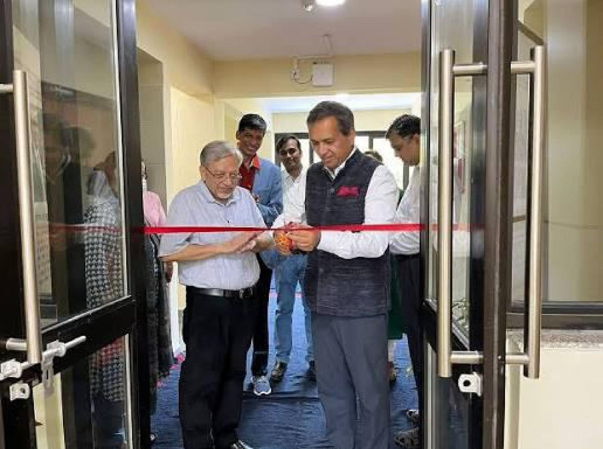
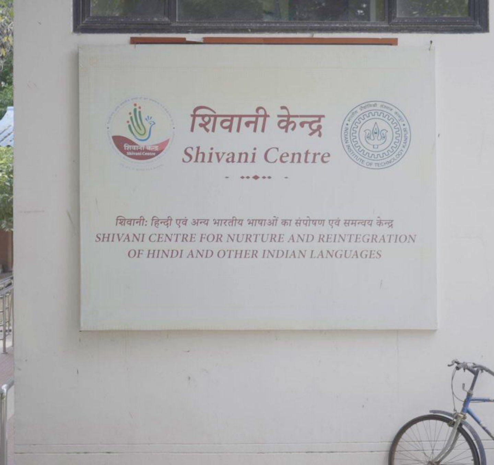

A Gift That Helps Every
Student Belong
Shivani Centre
The Shivani Centre helps students navigate language barriers while strengthening learning, literature and cultural expression across the IIT Kanpur campus.
Established through a USD 1 million contribution from distinguished alumnus Muktesh “Micky” Pant and the Micky and Vinita Charitable Foundation, the Shivani Centre honours the legacy of Padma Shri author Gaura Pant ‘Shivani’. At IIT Kanpur, that literary inheritance supports a contemporary mission: ensuring that language does not become a barrier to learning, confidence or belonging.
Arriving with ability—and an unfamiliar language
Every student entering IIT Kanpur has demonstrated exceptional academic ability. Yet students do not all arrive equally prepared for an English-dominated academic environment.
For those educated primarily in Hindi or another Indian language, understanding technical vocabulary, following lectures and expressing complex ideas may require additional effort. A student may know the answer but hesitate to speak. Over time, a language gap can become a confidence gap, affecting participation and belonging.
The Shivani Centre for the Nurture and Reintegration of Hindi and Other Indian Languages helps students navigate this transition while recognising the knowledge and linguistic identity they already possess.
Its purpose is not to lower academic standards or replace English. It is to remove an incidental barrier so that students can demonstrate more fully what they are capable of.

A son’s tribute to a literary voice
The Centre was established by Muktesh “Micky” Pant, a 1976 graduate of IIT Kanpur’s Department of Chemical Engineering, through the Micky and Vinita Charitable Foundation.
His gift honours his mother, Smt. Gaura Pant, known to generations of readers as Shivani. One of the twentieth century’s most widely read Hindi authors, she wrote extensively about human relationships, women’s inner lives and India’s social worlds, receiving the Padma Shri in 1982.
The connection is deeply fitting. A writer devoted her life to giving people and experiences expression through language. The institution bearing her name now helps ensure that students are not denied expression because of language.
Making knowledge more accessible
The Centre supports students from diverse linguistic and educational backgrounds and works to expand academic material in Hindi and other Indian languages.
Faculty members, tutors and student volunteers create and translate learning resources. In one initiative, 20 National Service Scheme volunteers began producing audiovisual and translated content for important courses.
The Centre also explores how technology can make Indian languages easier to use across digital platforms—connecting its cultural mission with IIT Kanpur’s technological capabilities.
Inclusion works in both directions. Hindi classes for international students help them navigate campus life and engage more naturally with the surrounding community.

Language, literature and institutional culture
Through initiatives such as the Akshar literature festival and Katha – The Art of Story Writing, the Centre brings writers, poets, performers, scholars and students together through literature, theatre, music and storytelling.
Micky Pant’s philanthropy therefore supports more than language instruction. It strengthens an institutional culture in which seeking support is not seen as inadequacy, linguistic identity does not need to disappear, and technical excellence can coexist with cultural understanding.
At IIT Kanpur, excellence brings students through the gates. The Shivani Centre helps ensure that language does not prevent them from finding their place once they arrive.